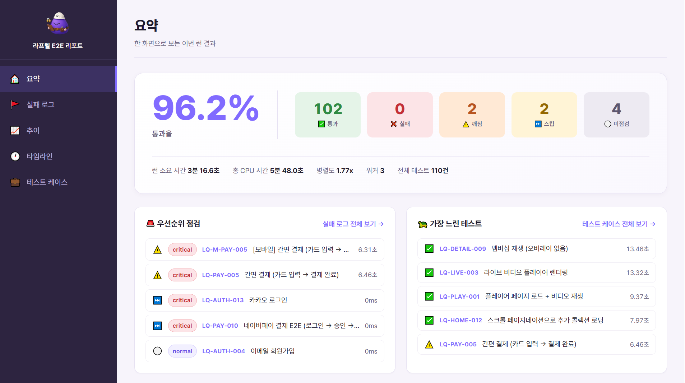

서버 배포가 머지될 때, 그리고 통합 검수가 시작될 때.
ㅡ 회귀가 가장 잘 새는 이 두 지점에 먼저 게이트를 세웠습니다.
필요한 곳 부터 자동화를 시작해갑니다.
로그인 ~ 결제 ~ 재생 핵심 플로우 · 사내 2026 혁신 KR
회귀가 가장 잘 새던 두 길목, 서버 배포 PR과 통합 검수입니다. 이제 회귀는 배포 전에 걸립니다.
개선 전 → 현재Reality → Hybrid → Flow → 자가격리, 다음은 다른 도메인으로
| 단계 | 목표 | 핵심 특징 | 상태 |
|---|---|---|---|
| Phase 1 · Reality | 진입점 안정화 | Locator 분리, 디버깅 가능한 코드 | 완료 |
| Phase 2 · Hybrid | 사용자 여정 확장 | 비즈니스 로직 연속성(결제) 검증 | 완료 |
| Phase 3 · Flow | 전체 시스템 최적화 | CI/CD 통합 · 일 3회 cron · Allure 트렌드 | 완료 |
| Phase 4 · 자가격리 | 게이트 신뢰도 유지 | flaky 자동 quarantine · AI 진단 + 사람 교정 · 진단 정확도 추적 | 완료 |
| Phase 5 · Expand | 타 도메인 확장 | 앱(iOS·Android·TV) 자동화 · 웹 스토어 추가 | 예정 |
Playwright + pytest로 짜고, 운영과 AI까지 묶었습니다.
locators → pages → flows → tests. UI가 바뀌어도 잘 흔들리지 않는 뼈대를 세웠습니다.
| Layer | 역할 | 경계 규칙 |
|---|---|---|
| Locator | 요소 위치 정의 | role→id→test_id→text→xpath 폴백 체인 |
| Page | 페이지 단위 동작 | BasePage 상속 · 비즈니스 로직 금지 |
| Flow | 여러 Page 조합 (결제 E2E) | TestFactory · assertion 금지 |
| Test | AAA 패턴 · assertion | selector 직접 작성 금지 |
로그인은 한 번만 합니다. 저장해둔 세션을 재사용하고, 만료됐을 때만 알아서 다시 만듭니다.
OTT는 비회원·베이직·프리미엄·소셜·결제 회원까지 권한과 계정 종류가 많았습니다. 권한마다 보이는 화면이 다르니, 권한별로 로그인 상태를 따로 만들어두고 테스트마다 맞는 걸 끼웠어요. 이 “권한을 정확히 흉내 내는 것”이 OTT 자동화에서 특히 중요한 부분이었습니다.
| 단계 | 조건 | 비용 |
|---|---|---|
| ① 재사용 | 토큰 유효 + 계정 일치 | 0초 |
| ② API 재생성 | 토큰 만료 / 계정 불일치 | ~1초 |
| ③ UI fallback | API 실패 | ~30초 |
Playwright 기본 브라우저로는 DRM 콘텐츠가 재생되지 않습니다. 쉬운 길과 정확한 길 사이의 선택이 필요했습니다.
DRM은 영상이 무단으로 복제·재생되지 않게 막는 저작권 보호 기술입니다. 보호된 영상은 일반 자동화 브라우저에서 재생이 막혀, 재생을 검증하는 것 자체가 까다로웠습니다.
제작은 쉽지만, 사용자가 실제로 보는 DRM 재생 경로를 거치지 않습니다. ‘테스트를 위한 테스트’가 될 위험.
비용이 더 들더라도 connect_over_cdp로 실제 Chrome을 연결해 사용자가 보는 경로 그대로 검증합니다.
PR · cron · 수동 세 갈래로 돌고, 러너와 세션은 사람 손 없이 준비됩니다.
DRM·CDP 재생은 실제 Chrome이 필요해 러너를 자체 호스팅했습니다. Mac Studio에서 돌아가고, 한 런은 최대 30분으로 제한합니다.
clean:false로 런 사이에 venv·Playwright 캐시를 보존하고,
xdist 3-worker로 병렬 실행합니다.
매 런 권한별 Storage State를 API로 만들고, 실패하면 UI 로그인으로 폴백합니다. 따라서 사람이 미리 로그인해둘 필요가 없습니다.

정기 회귀 결과를 Slack으로 바로 받습니다.
실패엔 AI 1차 진단을 붙이지만, 진단이 맞았는지는 이후 재발 여부로 확인 중 입니다.
AI 진단은 참고용으로만 사용합니다. "AI가 맞았나"를 사람이 바로 체크하는 방식은, 이미 AI 답을 본 탓에 무심코 동의하게 되는 확증 편향이 생겼어요. 진짜 기준은 시간이며, 고친 테스트가 이후 여러 번 돌아도 안 깨져야 제대로 고친 것으로 봅니다.
간헐 실패(flaky)가 쌓이면 테스트를 못 믿게 됩니다. 그 노이즈를 재현율로 가려내기로 했습니다.
flaky 1건이 전체 게이트를 빨갛게 만들지 않게
— 격리로 신호 대 잡음을 지키되 추적은 멈추지 않는다.
100% 실패는 진짜 버그 → 격리 부적합.
— 진짜 회귀를 숨기지 않기 위한 안전장치.
자가격리는 사람의 판단을 대신하기보다 시간을 벌어주는 역할입니다. 간헐 실패가 당장 릴리즈를 막지 않게 비켜두되 데이터는 계속 쌓아서, 급한 불 끄듯 말고 여유 있을 때 제대로 들여다볼 수 있게 하기 위함입니다.
혼자 잘 쓰는 건 반쪽이라, 팀이 다시 쓸 수 있게 구조로 남겼습니다.
.claude/rules/ — python·testing·locator가 paths로 자동 적용. 실수 3회 → 규칙화 → skill 추출.
e2e-runner · python-reviewer · security-reviewer · automation-spec-writer(SDD: Policy Spec → LQ- test_id 사전 할당).
analyze-fails · gen-locator · pattern-replace · qa-test-review(리뷰어 4종 병렬 + moderator 최대 5라운드).
hook으로 main push·시크릿 commit 차단, 저장 시 자동 포맷·lint. wiki에 도메인 known-flaky 자산화.
테스트를 위한 테스트가 아니라, 실제 여정을 위해.
1인 환경에서 E2E 자동화 프레임워크를 제로 베이스로 세우고, 커머스·OTT의 결제·계정을 검증해 왔습니다. 터진 곳을 막는 데서 시작했지만, 이제는 물이 알아서 제 길로 흐르게 만드는 쪽으로 가고 있습니다.
© 2026 E2E Test Automation Portfolio